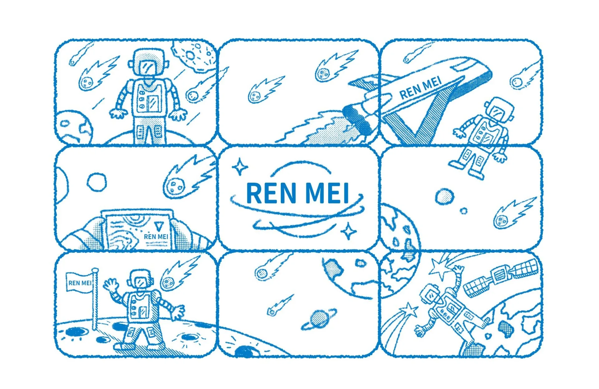
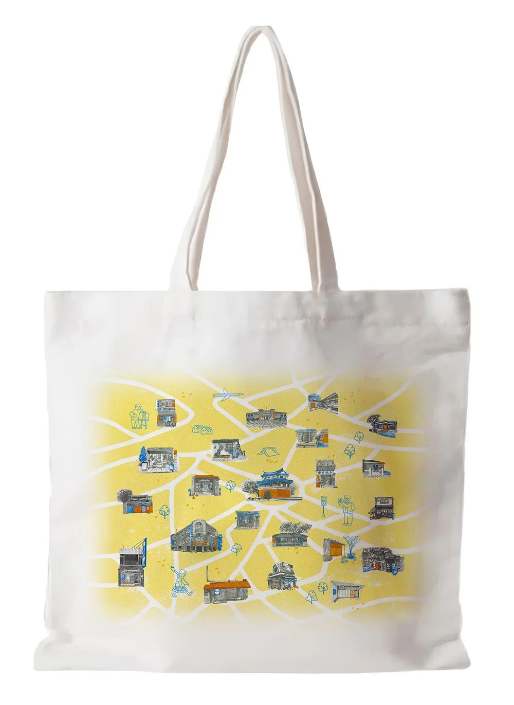
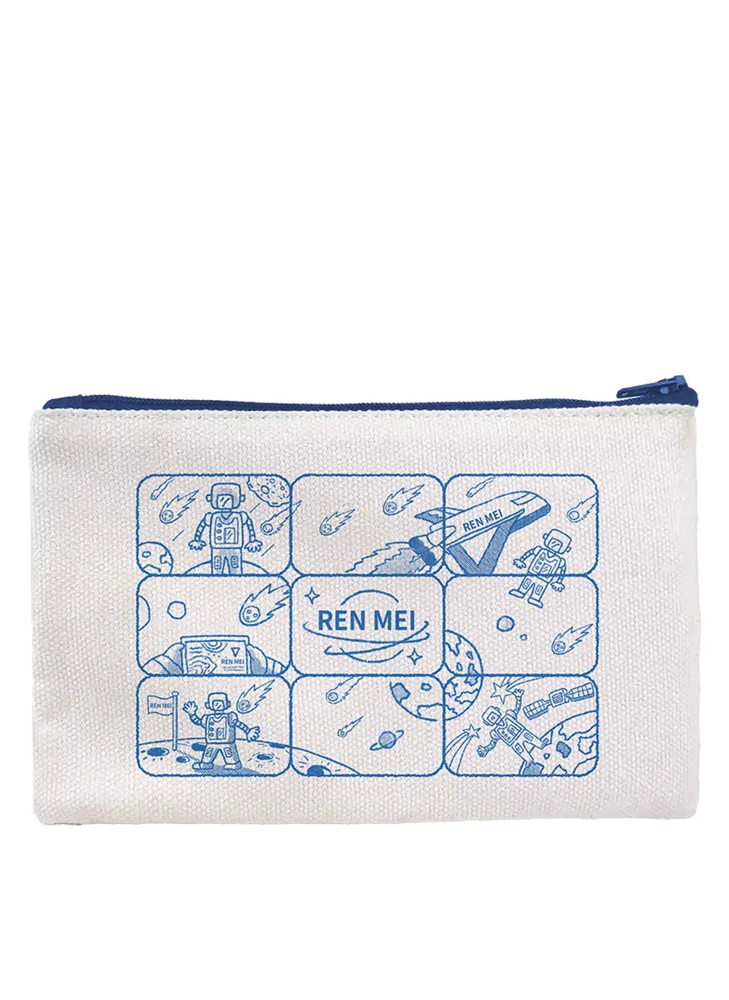
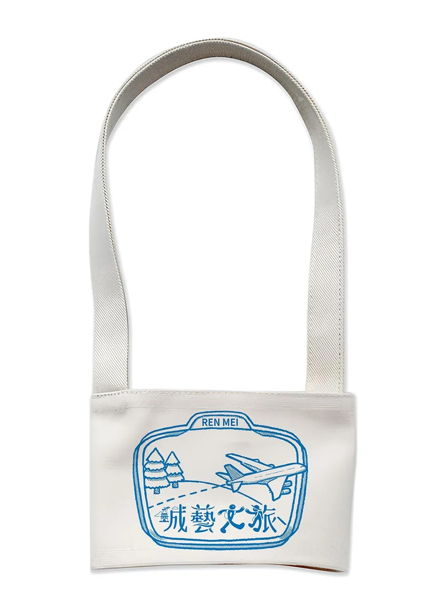
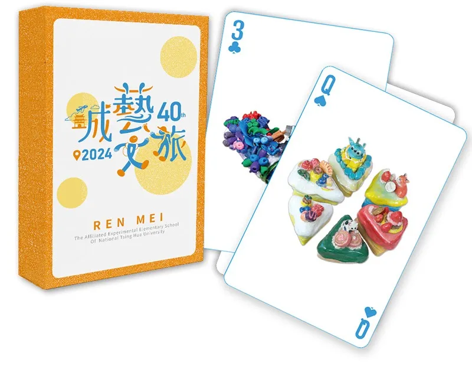
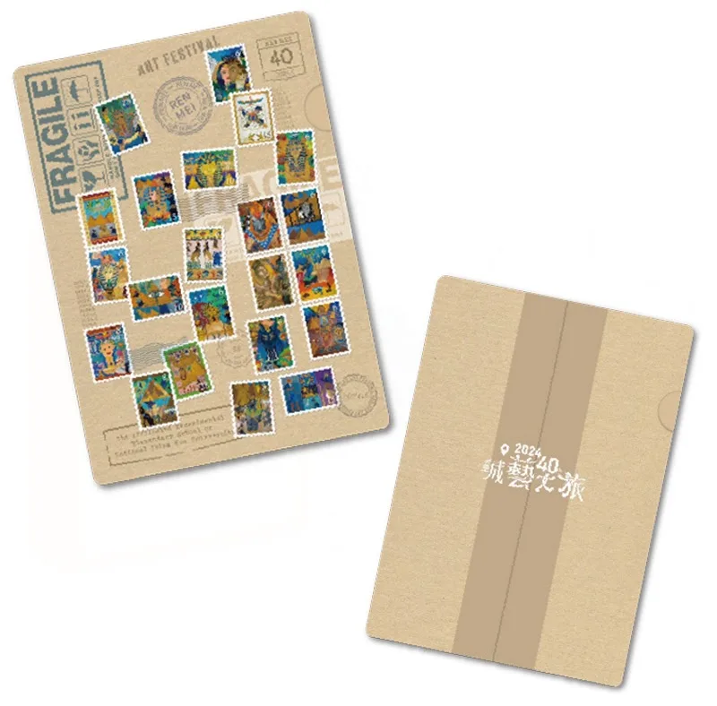

跳到主要內容
2024 畢業美展《城藝文旅》 4.24 – 4.28 新竹市演藝廳 1F AB廳
REN MEI
仁美里
首頁
出發
作品展示
Ecological Contrast 明信片
Mysterious Egypt 明信片
甜點系 鑰匙圈
愛在新竹 徽章
建築@新竹 馬克杯
建築@新竹／甜點系 集合貼紙
形象周邊
生活點滴
聯絡方式
選單

形象周邊
周邊商品
作品展示
/
形象周邊

帆布包
周邊商品

筆袋
周邊商品

環保杯袋
周邊商品

撲克牌
周邊商品

資料夾
周邊商品
更多作品
作品展示
Ecological Contrast
明信片
Mysterious Egypt
明信片
甜點系
鑰匙圈
愛在新竹
徽章
建築@新竹
馬克杯
建築@新竹／甜點系
集合貼紙
←
→
×
←
→